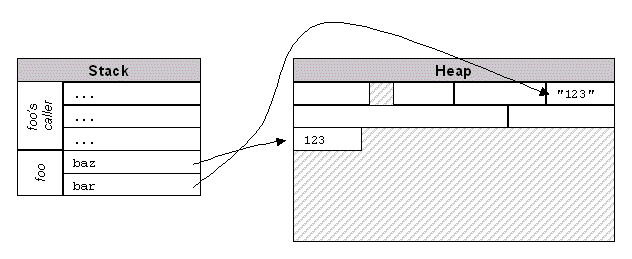
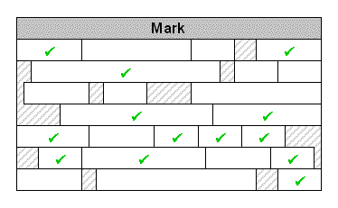
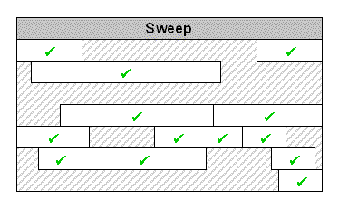
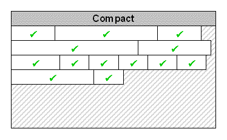
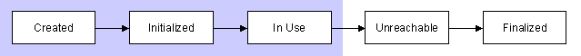
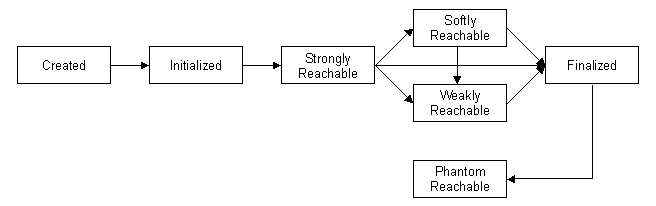
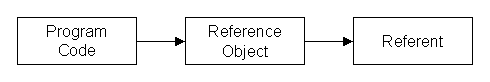

译 · java reference objects
原文链接
Introduction
大意：我原来做c++的，后来转java了，我觉得java挺好。^-^
(原文中有 References 和 referent 两个概念需要明确一下：References 是我翻译成引用,就是强引用弱引用的那些引用的意思，referent是引用持有的实例，就是创建引用时通过构造函数传进去的实际对象)
java堆和对象声明周期
作为一个刚投身 Java 阵营的 C++ 程序员， 对于堆栈的理解很难转换过来。C++里面，对象可以用 new 运算符创建在堆上，也能通过自动分配创建在栈上。下面的情况在C++里面是合法的：在栈上创建一个 Integer 对象。但是用Java编译器去编译就会报错
Integer foo = Integer(1);Java 不同于C++，它把所有的对象存储在堆上，而且只能通过new 运算符去创建对象。栈上只存储对象的一个引用，而非对象本身。思考下面的代码
public static void foo(String bar)
{
Integer baz = new Integer(bar);
}下面的图显示了这个方法中堆栈的关系，栈会划分成一个个的frames，frame里面保存了供方法使用的参数和本地变量。这些变量是指向堆中对象的指针。

现在来仔细看看foo()的第一行，这里new了一个Integer对象，jvm首先尝试去为这个对象寻找足够大的一块堆空间，在32位的JVM中大概需要12bytes。如果能够分配到足够的空间，接下来就会调用构造函数，构造方法中会解析传入的字符串并且初始化新分配的对象。最后jvm存储对象的指针到baz变量。
这是正常的情况，当然也会有不太正常的情况，比如当新的运算符不能为对象找到这12个字节空闲空间。这种情况下，在抛出OutOfMemoryError异常前，会进行一次垃圾收集操作尝试腾出一些空闲空间。
垃圾收集
当Java给出了在堆上创建对象的new操作符，但是没有给出对应的delete 云算符，当foo()方法返回时，已经超出了变量baz的作用范围，但是他指向的对象还在在堆上。如果这是故事的结束，那么所有的应用程序都会很快耗尽内存。所以Java提供了垃圾收集器去清理这些不再被引用的对象
当程序尝试创建新对象但是没有足够的堆空间时垃圾回收器就会开始工作。在收集器扫描堆，寻找并清理死亡对象的时候请求线程会被挂起。如果收集器不能清理出足够的空间，并且jvm无法扩展堆空间，创建对象就失败了，然后你的程序就挂了。
Mark-Sweep
java中一个的垃圾收集器一直是个经久不衰的神话，很多了认为jvm使用引用计数算法来回收对象，但是实际上jvm使用的是扫描标记算法，扫描标记算法背后的原理很简单:每个不可达的队形都是垃圾并且应该被回收。
标记扫描算法的步骤如下:
Phase 1: Mark
垃圾收集器从root引用开始，遍历标记所有能到达的对象。

Phase 2: Sweep
所有没有被标记的对象就是不可达的，是垃圾。如果垃圾对象重写了finalizer方法，就把它加到finalization queue(后面会讲到)。若没有那么这块空间就可以回收了。(补充：这需要取决于具体的虚拟机实现)

Phase 3: Compact (optional)
一些垃圾收集器还有第三个步骤：紧凑。在这一步GC会移动对象合并那些垃圾收集遗留下来的空闲空间。这样可以防止内存碎片化，内存碎片会导致大段的连续内存分配失败。

那么，roots节点包括哪些呢？在一个简单的java application 中，方法参数，本地变量(存储在栈上)，正在执行的表达式的操作数(也存储在栈上)，静态类成员变量。
在例如app-servers等使用自己的类加载器的程序中，情况就不同了：只有使用系统 classloader(JVM启动时使用的类加载器)加载的类会包含在 root 引用中(翻译的不对？:only classes loaded by the system classloader (the loader used by the JVM when it starts) contain root references.)。任何程序自己创建的类加载的在没有应用的时候都会被收集。这也是app-servers能够热部署的原因：它们为每个已部署的应用程序创建一个单独的类加载器，并在卸载或重新部署应用程序时不再持有classloader引用
这对理解root引用很重要，它定义了什么是强引用：如果你能够找到一条从根节点到特定节点的引用链，那么这个对象就是有强引用的，不能被回收。
现在回到foo()方法，参数bar和本地变量baz在方法执行期间是强引用变量，当方法完成时，他们就超出了作用域，他们引用的对象就能被回收。或者考虑foo()可能会返回一个他创建对象的integer对象的实例，这意味着对象仍然保持着强引用。
考虑下面的代码：
LinkedList foo = new LinkedList();
foo.add(new Integer(123));变量foo 是一个root引用，指向LinkedList对象，链表里面有0或多个元素，每个元素都执行它的后继。这是一个强引用链，这里的对象放的Integer是不能被回收的，
但是只要foo超出作用域，那这里面的所有东西就不再是强引用了。
你可能会想，如果发生了循环引用会怎样：答案是没关系…(扫面标记算法不怕这个)
Finalizers
C++ 允许对象定义析构函数：当对象超出作用域或者显式删除时析构函数会被调用来释放资源。对于多数对象，需要在这里释放new或者malloc申请的内存。
在java里面，垃圾收集器会替你处理内存清理，所以你不需要显式的声明析构函数。
但是，内存不是唯一需要释放的资源，比如FileOutputStream：当你创建一个对象实例，他会从文件系统申请一个句柄，如果让所有对流的引用在关闭之前超出范围，那么文件句柄会发生什么？
答案是流有一个finalize方法：一个由JVM在垃圾回收器回收对象之前调用的方法。在FileOutputStream的例子中，dinalizer会关闭stream,释放文件句柄刷新缓存确保所有的数据正确写到磁盘。
/**
* Cleans up the connection to the file, and ensures that the
* <code>close</code> method of this file output stream is
* called when there are no more references to this stream.
*
* @exception IOException if an I/O error occurs.
* @see java.io.FileInputStream#close()
*/
protected void finalize() throws IOException {
if (fd != null) {
if (fd == FileDescriptor.out || fd == FileDescriptor.err) {
flush();
} else {
/* if fd is shared, the references in FileDescriptor
* will ensure that finalizer is only called when
* safe to do so. All references using the fd have
* become unreachable. We can call close()
*/
close();
}
}
}任何对象都能有finalizer,你只需要重写finalize方法
protected void finalize() throws Throwable
{
// cleanup your object here
}finalizers 方法看起来是一个简单的清理方法，但是他有一些严重的问题。首先你千万别依赖这个方法去做任何重要的事情，因为finalizer可能永远都不会执行，
程序可能在垃圾收集前就退出了，还有其他一些乱七八糟的问题。
Object Life Cycle (without Reference Objects)
整体来看，对象的生命周期可以通过下面的简单图片来总结:创建，初始化，使用，可被收集，被回收。阴影区域表示对象“强可达”的时间.

Enter Reference Objects
JDK 1.2 引入了 java.lang.ref 包, 和对象声明周期的三个新阶段: softly-reachable, weakly-reachable,和phantom-reachable. 这些阶段仅仅在对象回收时有用，并且所讨论的对象必须是引用对象的引用：
- softly reachablet
软引用，垃圾收集器会尽量保留这些对象，但是当内存不足将要抛出 OutOfMemoryError 错误时会先回收这些对象 - weakly reachable
弱引用 WeakReference，垃圾收集器会随时回收，不会试图保留这种引用。实际上，对象会在老年代(major)垃圾收集中被回收，在新生代(minor)垃圾收集中可能会存活 - phantom reachable
幻影引用？ PhantomReference，已经是选中被回收的对象了，并且finalizer方法已经运行(why?我不确定)，你没法通过get获得可访问的强引用对象。
正如你可能猜到的，将三个新的可选状态添加到对象生命周期图中会造成混乱。虽然文档表明从通过软，弱和幻影强烈可达到的逻辑扩展，但是实际要依靠你程序创建了什么样的引用对象。如果创建WeakReference但不创建SoftReference，那么对象将从强可达直接弱可打然后完成到收集。

这对理解并不是所有的对象都附加到引用对象这点很重要，事实上只有少数会附加到引用对象。引用对象是一个中间：通过引用对象到达实际对象，显然在你的代码中你并不想要这一层。
实际上大多数你只会小范围使用这个对象.
References and Referents
引用对象是你的程序代码和其他对象之间的中间层，称为referent。每个引用对象通过传入referent构建，并且不能改变实际对象。

引用对象提供一个get方法来取回强引用，垃圾回收器会在任何地方回收引用，一旦引用被回收了，get方法就会返回null,使用引用属性，你需要把大麦写的像下面一样：
SoftReference<List<Foo>> ref = new SoftReference<List<Foo>>(new LinkedList<Foo>());
// somewhere else in your code, you create a Foo that you want to add to the list
List<Foo> list = ref.get();
if (list != null)
{
list.add(foo);
}
else
{
// list is gone; do whatever is appropriate
}总结:
- 注意检查 referent 是否为 null
引用任何时候能有可能被清理。 - 在使用的时候必须持有强引用
比如后面这样的写法是错误的 ref.get().add(foo)，必须持有显式写明持有强引用，因为在get和add中间对象可能被回收，垃圾收集器跟作业跑在不同的线程中。
and doesn’t care what your code is doing. - 要持有引用对象的强引用。
如果你创建了一个引用对象，但是运行超出了他的作用域，那么这个引用对象本身就会被回收了。看起来很明显，但是容易被忘记，尤其是在使用reference queues跟踪你的引用的时候。
另外需要记得soft, weak, 和 phantom references 只有在他们持有的对象没有强引用时才起作用。他们的存在使你可以知道对象被回收的点。这看起来有点奇怪 – 如果你不在持有强引用，为什么你还要关心这个对象什么时候被回收呢？原因取决于具体的引用类型。
Soft References
让我们先从soft references开始回答这个问题，如果一个对象是软引用对象，并且没有其他强引用，那么GC可以回收这个对象但是GC尽量不这么做，
最后的结果是，软引用对象会存活很长时间，主要jvm有足够的内存。
JDK文档说软引用适用于内存敏感的缓存：每个缓存的对象通过SoftReference访问，如果JVM决定它需要空间，那么它将清除一些或所有的引用并回收它们的引用，如果它不需要空间，则对象保留在堆中，并且可以被程序代码访问。在这种场景先，当需要使用对象时持有强引用，否则是弱引用。如果弱引用被清除，你需要刷新缓存。
然而，为了使用这玩意，缓存的对象会相当大 - 每对象个大约几千字节。如果你实现一个文件服务器，需要对相同的文件文件定期检索，或有大对象图(large object graphs?)，需要缓存或许会有用。但是如果你的对象很小，那么你必须清除很多对象才能产生影响，而引用对象会增加整个过程的开销.
Soft Reference as Circuit Breaker
下面原文是举了一个数据库访问的例子，我这里就直接粘贴代码了
public static List<List<Object>> processResults(ResultSet rslt)
throws SQLException
{
try
{
SoftReference<List<List<Object>>> ref = new SoftReference<List<List<Object>>>(new LinkedList<List<Object>>());
ResultSetMetaData meta = rslt.getMetaData();
int colCount = meta.getColumnCount();
while (rslt.next())
{
rowCount++;
// store the row data
List<List<Object>> results = ref.get();
if (results == null)
throw new TooManyResultsException(rowCount);
else
results.add(row);
results = null;
}
return results;
}
finally
{
closeQuietly(rslt);
}
}如果不使用引用，那么当读取查询结果时，如果记录太多会引发 OutOfMemoryError 错误，这么看来即便是引发OutOfMemoryError也没什么，说明我们没处理好呗。但是考虑如果我们的程序跑在服务器上，并且并不只有这一个程序，那么我们的程序占用太多内存影响其他程序。
Soft References Aren’t A Silver Bullet
这段大体意思是说，使用这个亦有可能发生 OutOfMemoryError ，另外通过弱引用get到的强引用要不用了不要保留强引用，不然这个弱引用跟没有没什么区别。
Weak References
实际上有两个主要用途：关联没有固有关系的对象，并通过规范化映射减少重复。
The Problem With ObjectOutputStream
ObjectOutputStream 和他的搭档 ObjectInputStream 提供了一种对象序列化的方式，从对象模型的角度来看，流和使用这些流写入的对象之间没有关系：流不是由写入的对象组成，也不会聚合它们。为了保留对象标识，输出流将唯一标识符与写入的每个对象相关联，随后请求写入的对象如果引用过前面的对象，会替换成标识符。这样可以解决循环引用的问题。
但是为了实现这个功能，流需要持有每个写入对象的强引用，这就会引发一个问题，消息是瞬态的但是流持有的对象会一直在内存里面，这样早晚会发生 out of memory(除非程序员显式的调用reset())
那么如果把流持有的是弱引用，当程序中不再持有对象的强引用的时候，弱引用就会被释放，但是…(一顿关于为什么JDK开发者不使用弱引用解决这个问题的牢骚牢骚)
使用 Canonicalizing Maps 去除重复数据
作者认为weak references 最好的应用场景是canonicalizing map, 一种确保在同一时间只有一个实例存在的机制。String.intern()是这种应用的典型的例子。
下面给出一段有问题的例子 intern 例子
private Map<String,String> _map = new HashMap<String,String>();
public synchronized String intern(String str)
{
if (_map.containsKey(str))
return _map.get(str);
_map.put(str, str);
return str;
}这段代码如果长时间运行持有的对象就会越来越多，最终把内存耗尽。
private Map<String,WeakReference<String>> _map
= new WeakHashMap<String,WeakReference<String>>();
public synchronized String intern(String str)
{
WeakReference<String> ref = _map.get(str);
String s2 = (ref != null) ? ref.get() : null;
if (s2 != null)
return s2;
_map.put(str, new WeakReference(str));
return str;
}如果改用弱引用来实现，当内存中不存在强引用时，弱引用就被回收了。这样就不存在对象积累越多的情况了。注意上面的代码可能存在多线程访问所以加了锁。
(补充：这种弱引用看起来就像是保存了一个引用的副本，我们只是希望通过这个副本去找到相应的对象，但是当强引用不存在了，我们不希望这个副本影响到对象的生命周期)
最后，我们怎么知道哪些弱引用或者软引用被回收了呢？就是后边要说的引用队列了。
Reference Queues
测试一个引用是否为空来判断实际对象是否被回收是一件非常低效率的事情，如果引用太多，你会会在这上面花费很多时间。
更好的解决方案是 reference queue：把引用对象在创建时就与一个引用队列相关联，当实际对象被清理后把引用添加到这个队列中。想要知道哪些对象被清理了，你可以轮训队列。这个过程可以在后台线程中完成，但是一般是在你创建一个新的引用时轮询。(WeakHashMap 是这么做的)
引用对列经常与 phantom references 引用一起使用，但是也可以与其他引用类型配合使用，下面是一个弱引用的例子:创建了一堆缓冲区，通过WeakReference访问，并在每次创建后查看已清除的引用
public static void main(String[] argv) throws Exception
{
Set<WeakReference<byte[]>> refs = new HashSet<WeakReference<byte[]>>();
ReferenceQueue<byte[]> queue = new ReferenceQueue<byte[]>();
for (int ii = 0 ; ii < 1000 ; ii++)
{
WeakReference<byte[]> ref = new WeakReference<byte[]>(new byte[1000000], queue);
System.err.println(ii + ": created " + ref);
refs.add(ref);
Reference<? extends byte[]> r2;
while ((r2 = queue.poll()) != null)
{
System.err.println("cleared " + r2);
refs.remove(r2);
}
}
}这里一些需要注意的地方是：首先，虽然我们创建的是弱引用的实例，但是当进入引用对列然后我们再次获取的时候返回的是一个没有具体类型的引用，这告诉我们一旦进入对列我们就不在关心引用的具体类型了，因为引用所关联的具体对象已经被回收了。
其次是我们必须持有引用对象的强引用，引用对象有对象的引用，但是队列在引用对象进入对列之前却不知道引用对象的存在。如果我们没有持有引用对象的强引用，那么这个引用对象会被直接回收，我们也就看不到它进入引用对列的那天了。
Phantom References
Phantom references 与软引用弱引用不同，他不能用来访问他们自己的关联的实际对象。他们唯一的目的是当他们关联的实际对象被回收时给你个通知。这看起来毫无意义，但是实际上你可以通过这个通知执行资源清理，这比通过 finalizers 来清理资源靠谱多了。
The Trouble With Finalizers
大体意思是说：前面关于对象的生命周期中提到了一些不适合用于非内存资源清理的问题，这里我们在强调一下：
- finalizer 可能永远都不会被执行
- Finalizers 中可能再次创建强引用，但是下一次收集时这个Finalizer又不会再次执行了，这导致逻辑很乱。(finalize 只会被执行一次)
finalize 真正的问题他在第一次标记和垃圾回收直接引入了一个间隙，finalize 在一个独立的线程中运行，考虑下如果我们每个对象都有finalize的情况，和某些finalize 运行一些需要长时间运行的任务的情况。 ^-^
下面的程序展示了这种行为，虚拟机启动参数 -Xmx64m :
public class SlowFinalizer
{
public static void main(String[] argv) throws Exception
{
while (true)
{
Object foo = new SlowFinalizer();
}
}
// some member variables to take up space -- approx 200 bytes
double a,b,c,d,e,f,g,h,i,j,k,l,m,n,o,p,q,r,s,t,u,v,w,x,y,z;
// and the finalizer, which does nothing by take time
protected void finalize() throws Throwable
{
try { Thread.sleep(500L); }
catch (InterruptedException ignored) {}
super.finalize();
}
}The Phantom Knows
在对象被清理时会使 Phantom references 知道，所以也可以用于非内存资源清理，但是不像 finalize ，当应用知道时对象已经被清理了。
另外，清理调度是应用控制的而非GC.你可以使用一个或多个线程来清理，或者根据对象需要增加。一种替代方法 是使用对象工厂，并在创建新对象之前清除任何可以收集的实例。
phantom references 的 get 方法永远返回 null，这意味着我们必须一直持有资源的一个强引用，并且使用引用队列来识别引用是否被回收。
Implementing a Connection Pool with Phantom References
数据库连接在任何应用中都是很重要的资源：他们花费时间建立，并且数据库会严格限制同一时间的链接数量。so,coder 必须小心的使用这些资源，打开了要记得在 finally 方法中关闭。
大多数数据开发一般不是直接建立连接而是使用连接池，连接池使用多种方法来防止连接泄露。包括超时机制和链接回收。
后一个特征可以作为幻影参考的一个很好的例子。(原文中有一段关于连接池的例子，不贴代码了，具体细节可以去原文中看，代码大体就是返回的数据库连接做了一层包裹，连接池维护包裹对象的Phantom Reference，当包裹对象被回收时，Phantom Reference 就被添加到引用对列中，这样我们就能知道这个数据库链接该回收了。同时我们持有数据库连接的强引用这样数据库连接就不会被回收了，当然不排除其他情况导致数据库连接被关闭，所以我们也要在返回连接时检测连接是否可用)
The Trouble with Phantom References
Phantom References 也可能发生 finalizer 一样的问题：比如垃圾收集器没有执行垃圾收集操作，那么内存中的不可达对象就不会被回收，Phantom References也就不会进入引用队列了。当然你可以显式的调用System.gc()去通知jvm去进行垃圾回收（ps: 不太好吧）。